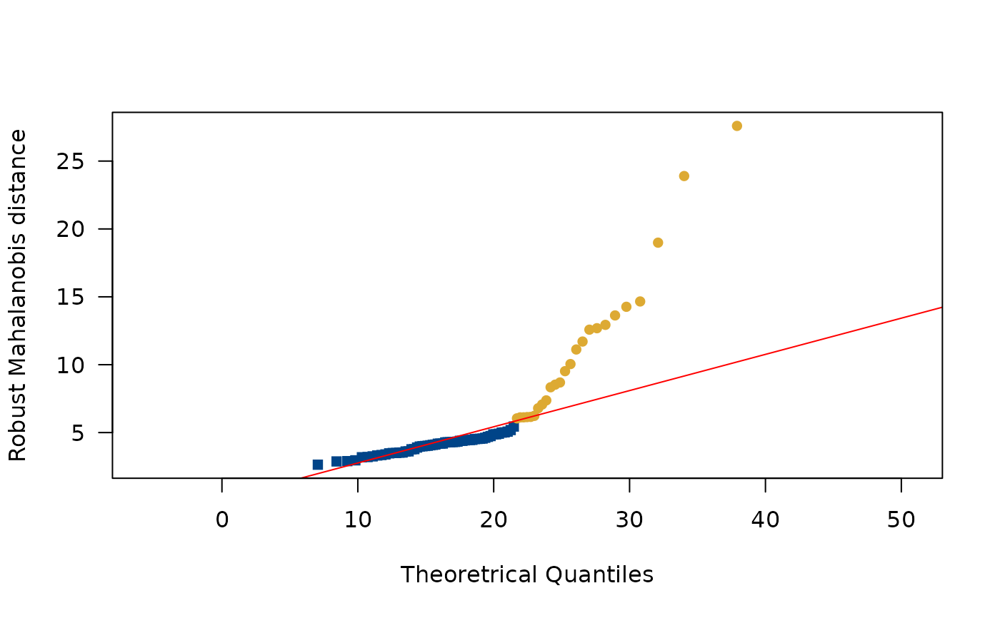
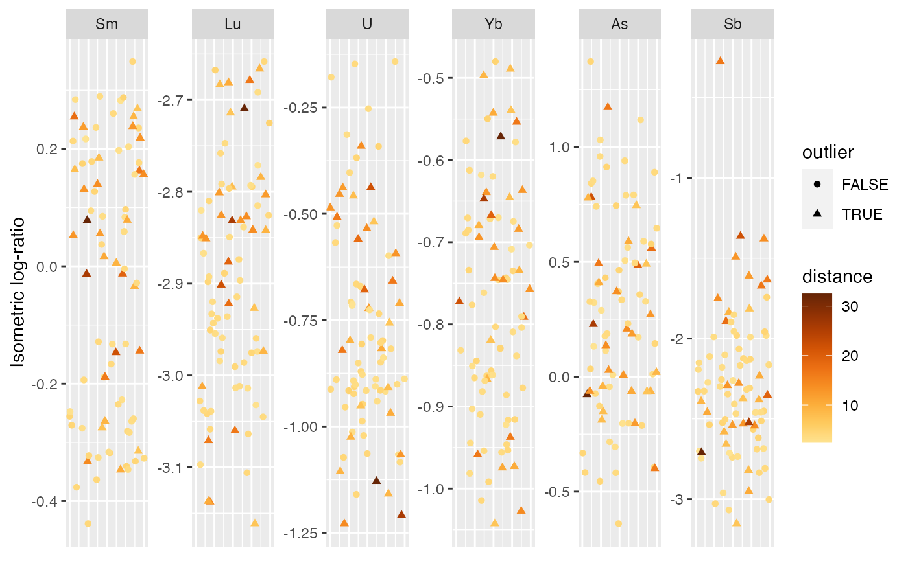

Outlier Detection
find_outliers(object, ...) count_outliers(object) plot_outliers(object, data, ...) # S4 method for CompositionMatrix find_outliers(object, level = 0.975, robust = TRUE, alpha = 0.5) # S4 method for OutlierIndex count_outliers(object) # S4 method for OutlierIndex,missing plot_outliers(object) # S4 method for OutlierIndex,CompositionMatrix plot_outliers(object, data, select = NULL)
| object | An OutlierIndex object. |
|---|---|
| ... | Currently not used. |
| data | A CompositionMatrix object. |
| level | A length-one |
| robust | A |
| alpha | A length-one |
| select | A |
find_outliers() returns an OutlierIndex object.
Filzmoser, P., Garrett, R. G. & Reimann, C. (2005). Multivariate outlier detection in exploration geochemistry. Computers & Geosciences, 31(5), 579-587. doi: 10.1016/j.cageo.2004.11.013 .
Filzmoser, P. & Hron, K. (2008). Outlier Detection for Compositional Data Using Robust Methods. Mathematical Geosciences, 40(3), 233-248. doi: 10.1007/s11004-007-9141-5 .
Filzmoser, P., Hron, K. & Reimann, C. (2012). Interpretation of multivariate outliers for compositional data. Computers & Geosciences, 39, 77-85. doi: 10.1016/j.cageo.2011.06.014 .
Santos, F. (2020). Modern methods for old data: An overview of some robust methods for outliers detection with applications in osteology. Journal of Archaeological Science: Reports, 32, 102423. doi: 10.1016/j.jasrep.2020.102423 .
Other outliers:
OutlierIndex-class
N. Frerebeau
## Coerce to chemical data data("kommos", package = "folio") coda <- as_composition(kommos[, -c(1, 2)]) coda <- remove_NA(coda, margin = 1)#> #> #> #> #> #> #>## Detect outliers out <- find_outliers(coda) count_outliers(out)#> [1] 29
